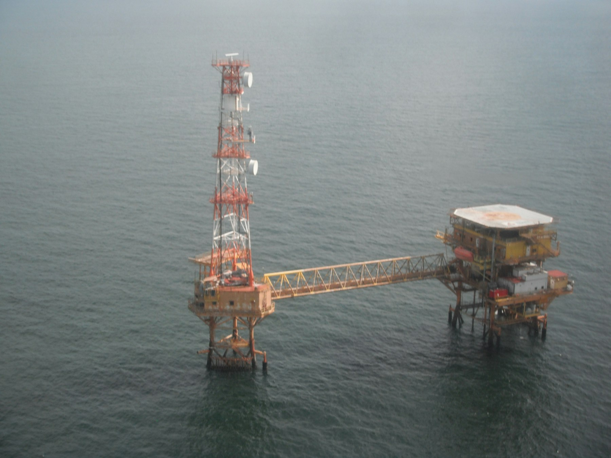

Offshore security surveillance
Continuous surveillance of offshore petroleum assets and the waters around them, stated as the company’s primary focus.

Services
Surveillance, patrols, monitoring and response, as described for offshore oil wells and associated facilities.
Offshore security challenge
The scale of the offshore environment and the concentration of oil wells and associated facilities create a requirement for continuous, professional surveillance.
The stated operational area is approximately 428 kilometres, covering offshore fields within Akwa Ibom State: more than 300 oil wells and about 90 associated facilities.
Security conditions described
Stated services
These descriptions stay with the company profile. They describe proposed and stated focus, not an appointment by a government agency.
Continuous surveillance of offshore petroleum assets and the waters around them, stated as the company’s primary focus.
Patrol presence at sea, proposed as part of continuous surveillance and security support.
Attention on the oil wells and associated facilities described within the stated operational area.
Tracking and observation of vessel movements around offshore assets, including movements the profile describes as unauthorized.
Collection of information to support the prevention and detection of illegal activity at sea.
Reporting of incidents so that a response can be organised without delay.
A response carried out in coordination with the relevant authorities, subject to required approvals.
Work aimed at identifying and discouraging illegal activity around vulnerable offshore oil assets.
Stated support against crude oil theft and illegal bunkering, including the cross-border bunkering named in the security conditions.
Protection of strategic offshore petroleum resources within the described operational area.